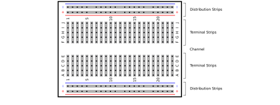

Next: C. Resistor Color Codes Up: PHYS328W Notes Previous: A. Reading Electronics Schematics
|  |
A breadboard allows for easy, temporary assembly and modification of a circuit by sliding components and wires into the various sockets. The sockets are linked in an easily recognizable pattern that allows for the components and wires to be connected in a circuit. This pattern is indicated by the shaded rectangles in Figure 25. The long distribution strips in the figure are meant for conveniently distributing power to components. These strips must be connected to power sources. They can also be used to distribute a connection to a common ground. The terminal strips are connected in groups of five. They are not connected across the channel. Integrated circuits (ICs) can be plugged in across the channel so that each pin is connected to a single terminal strip to allow for easy connections to other components.